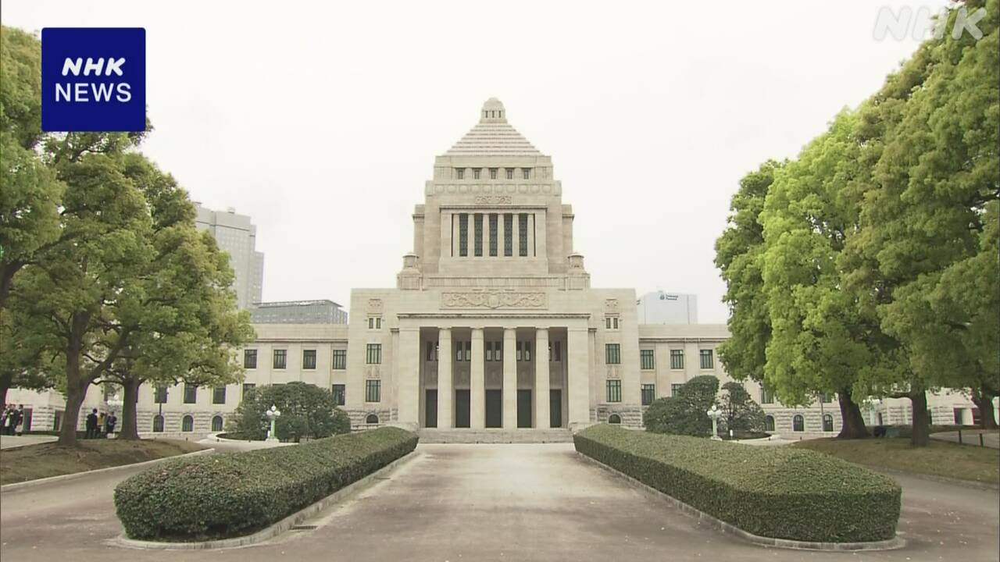
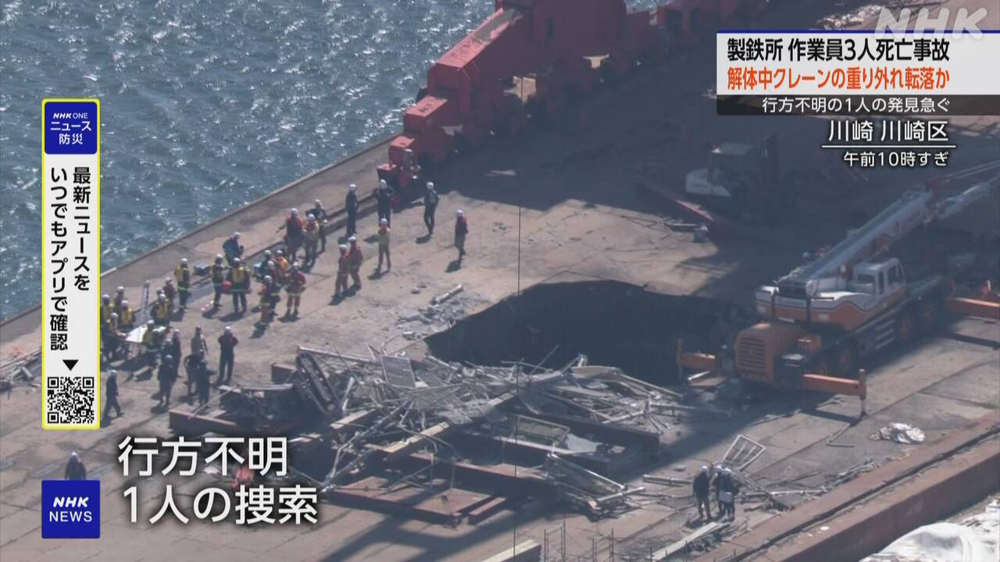

最新ニュース
1️⃣ アメリカなどとイランの戦い 2週間止める
アメリカとイランは、戦いを2週間止めることにしました。
日本の時間の8日の朝、アメリカのトランプ大統領は、「イランがホルムズ海峡を安全に通ることができるようにするというなら、イランへの攻撃を2週間止める」とSNSに書きました。
そして、イランの政府は「イランへの攻撃が止まったら、イランも戦いを止める。ホルムズ海峡は2週間、船が安全に通ることができるようになる」とSNSに書きました。
パキスタンなどが、アメリカとイランに戦いを止めるように話を続けてきました。
戦いを全部終わりにするための話し合いを、10日、パキスタンで行う予定です。
2️⃣ 戦いを2週間止める イランの人たちの意見
アメリカとイランが2週間戦いを止めることにしたあと、ロイター通信によると、イランの首都テヘランの広場に、たくさんの人たちが集まって来ました。
そして、イランの国旗を持って大きな声を上げています。
広場にいた女性は「私たちは国のトップが言うとおりにする。彼が戦いを止めようと考えたら、私たちもそうする」と話しました。別の女性は「アメリカが決めたことを守らなかったら、私たちはほかのやり方で行動する」と話していました。
3️⃣ 2026年度の国の予算が決まった

2026年度の国の予算が、7日、国会で決まりました。
今年4月から来年3月までの1年に、国が使う予定のお金です。全部で122兆円以上で、今まででいちばん多くなっています。
政府は、3月の終わりまでに決めたいと言っていました。しかし、参議院の野党が、しっかりと話し合う必要があると言って、予算は4月に決まりました。
国会では、これからも大事な話し合いが続きます。大きい地震など、災害の仕事を中心になって行う「防災庁」をつくる法律などについて話し合います。
4️⃣ 製鉄所で高い所から落ちて3人が亡くなった

7日、神奈川県川崎市の製鉄所で、高い所で仕事をしていた5人が下に落ちました。
5人は、使わなくなったクレーンを壊す仕事をしていました。
高さ30mぐらいにつけた重りの上にいました。この重りが急に落ちました。
この事故で3人が亡くなりました。警察は海に落ちた1人をさがしています。
事故が起こったとき、重りを軽くするために中のコンクリートを削っていました。
警察は、安全に仕事をしていたかなどを調べています。
- 〜ことにする
- 〜こと
- 〜ことができる
- 〜ように
- 〜という
- 〜ようにする
- 〜になる
- 〜ようになる
- 〜など
- 〜予定だ
- 〜ため
- 〜予定
- 〜によると
- 〜後 / 〜あと
- 〜ている / 〜でいる
- 〜方
- 〜から
- 〜から〜まで
- 〜まで
- 〜以上
- 〜までに
- 〜がある / 〜がいる
- 〜について
- 〜ところ
- 〜くらい / 〜ぐらい
- 〜ため(に)
- 〜中
vebaev.github.io
Generated: 2026-04-08 11:59:35 UTC